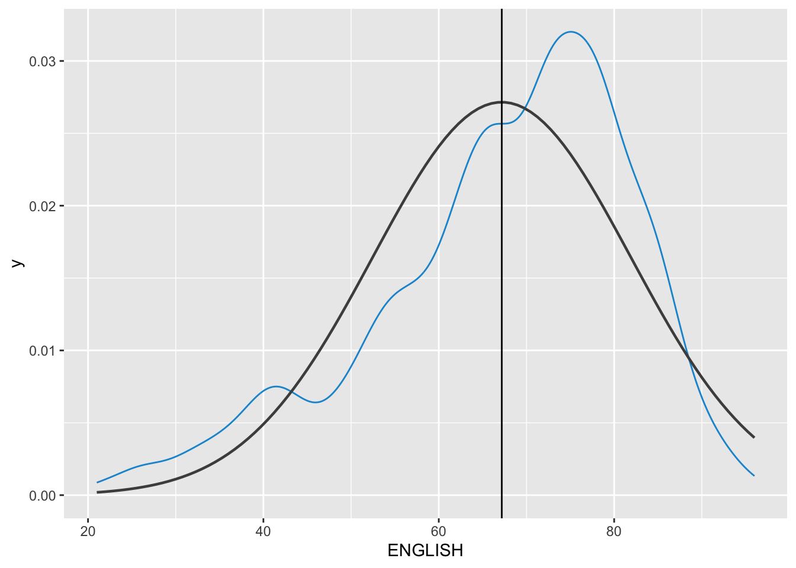
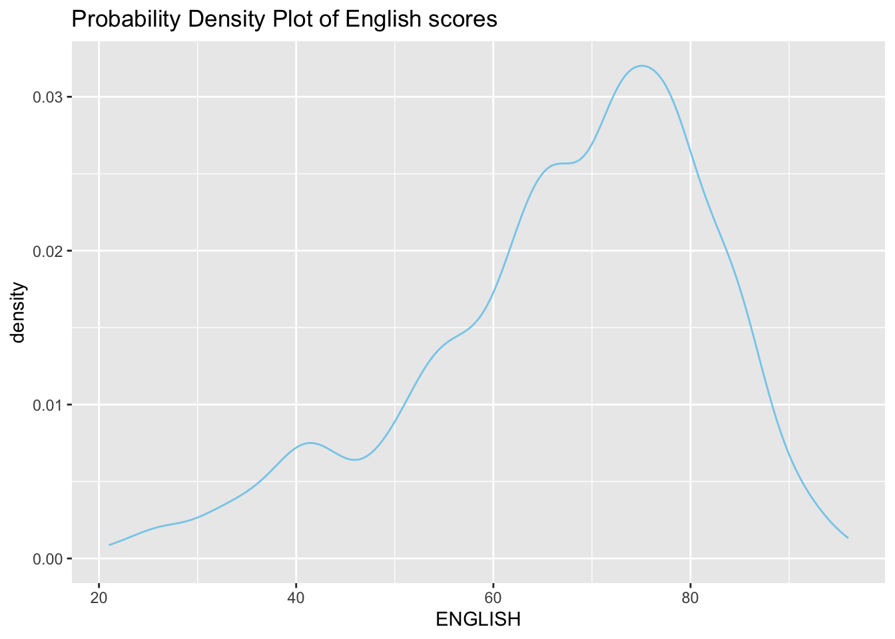
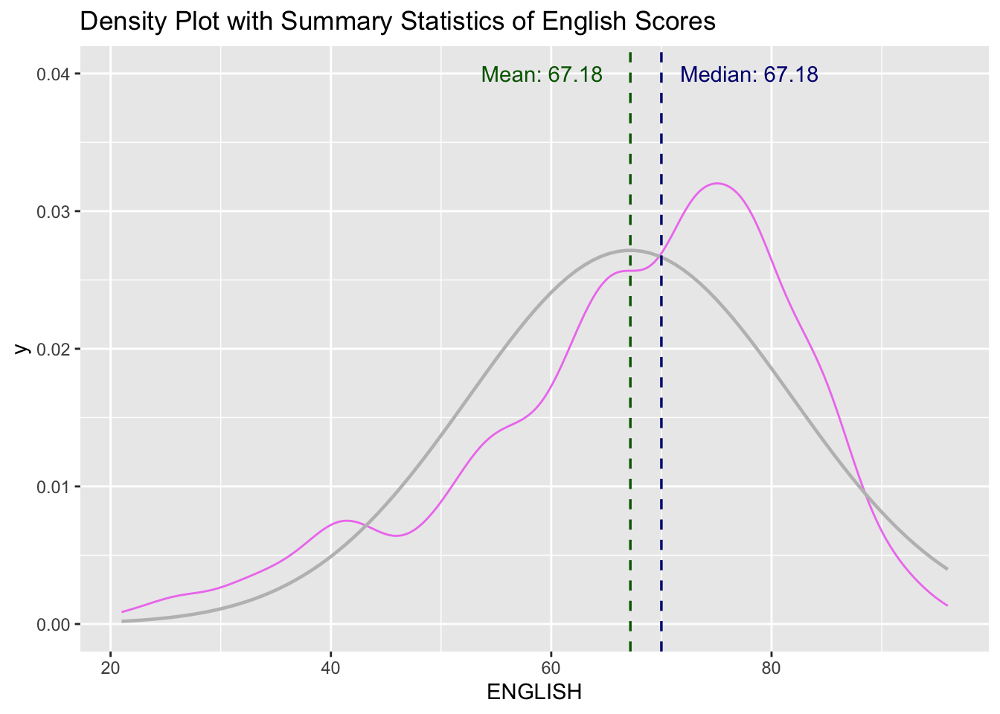
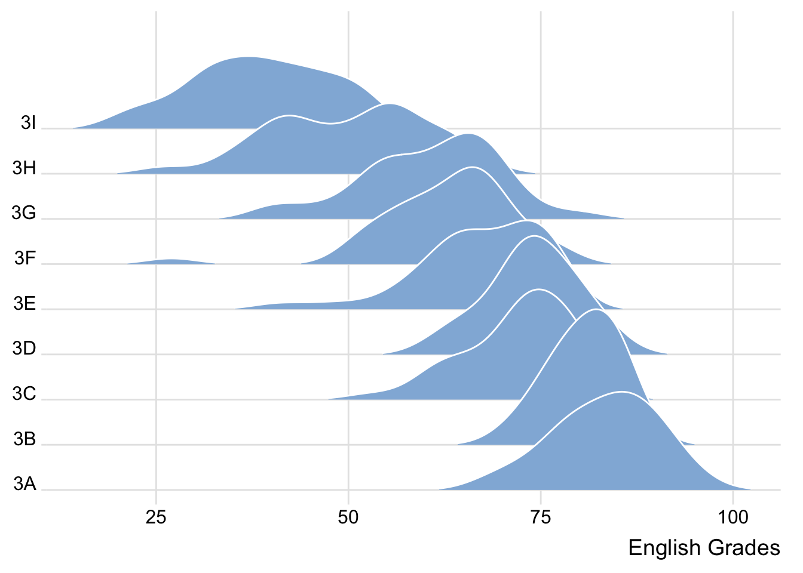
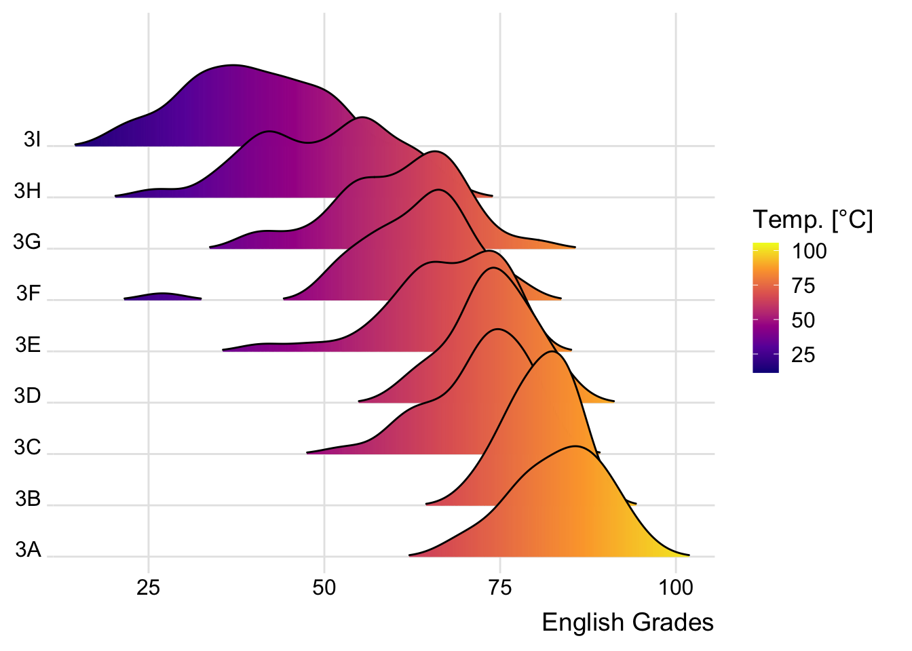
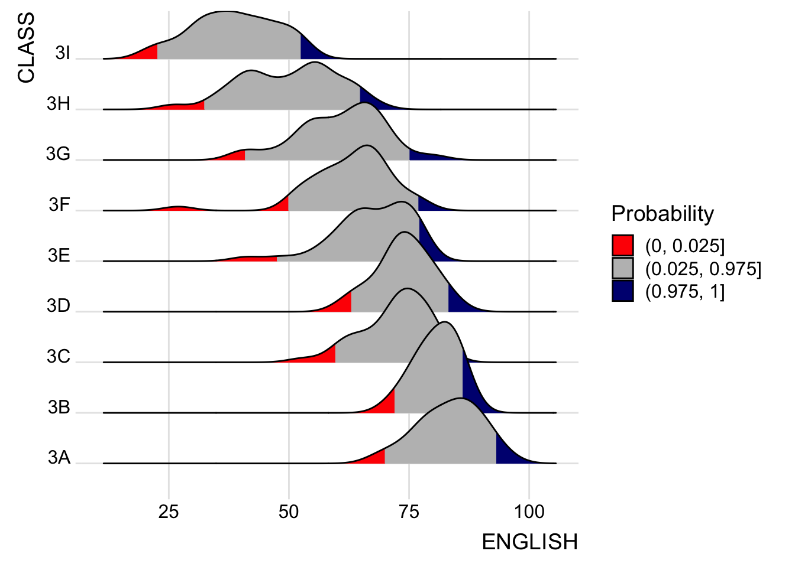
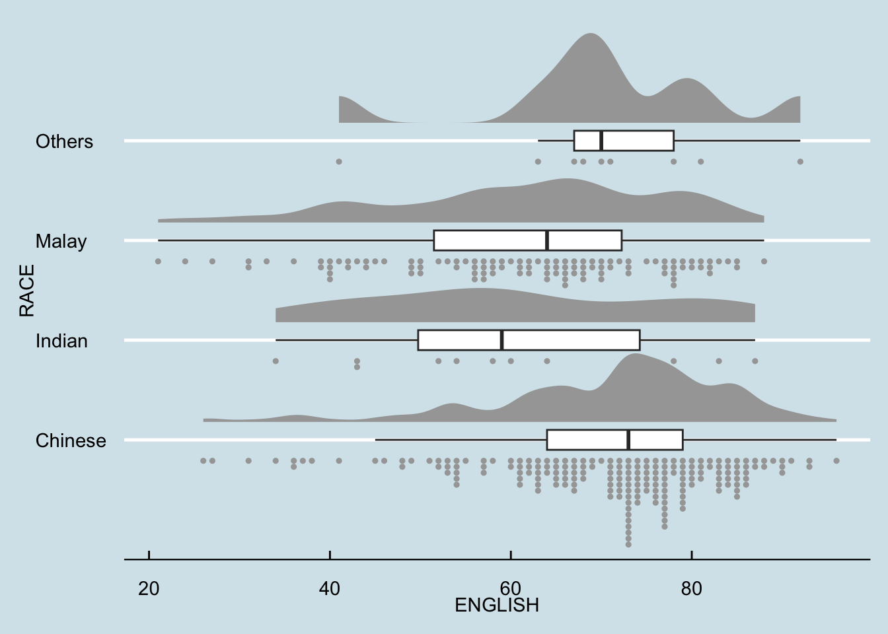

pacman::p_load(tidyverse, ggplot2, ggdist, ggthemes, colorspace, ggridges)In-class_Ex02 Demo
Setting up the environment
Installing required packages
Importing the Exam_data.csv
exam_df <- read_csv("data/Exam_data.csv")Visualising Distribution
median_eng <- median(exam_df$ENGLISH)
mean_eng <- mean(exam_df$ENGLISH)
std_eng <- sd(exam_df$ENGLISH)
ggplot(exam_df,
aes(x = ENGLISH)) +
geom_density(
color = "#1696d2",
adjust = .65,
alpha = .6
)+
stat_function(
fun = dnorm,
args = list(mean = mean_eng,
sd = std_eng),
col = "grey30",
size = .8) +
geom_vline(
aes(xintercept = mean_eng),
)
Probability Density Plot
Appropriate method for representing continuous values

Density Plot with Summary Statistics
The code chunk below includes a probability density plot (violet) and normal distribution plot (gray). The mean (green) and median (blue) of the data is also plotted.
median_eng <- median(exam_df$ENGLISH)
mean_eng <- mean(exam_df$ENGLISH)
std_eng <- sd(exam_df$ENGLISH)
# Probability Density Plot
ggplot(data=exam_df, aes(x = ENGLISH)) +
geom_density(color="violet",
adjust = .65,
alpha = .1) +
stat_function( # Normal Distribution Plot
fun = dnorm,
args = list(mean = mean_eng, sd = std_eng),
col = "gray",
linewidth = .8) +
geom_vline( # Mean line
aes(xintercept = mean_eng),
colour = "darkgreen",
linewidth = .6,
linetype = "dashed") +
annotate(geom = "text",
x = mean_eng -8,
y = .04,
label = paste0("Mean: ",
round((mean_eng),2)),
colour="darkgreen") +
geom_vline( # Median Line
aes(xintercept = median_eng),
colour = "navy",
linewidth = .6,
linetype = "dashed") +
annotate(geom = "text",
x = median_eng +8,
y = .04,
label = paste0("Median: ",
round((mean_eng),2)),
colour="navy") +
ggtitle("Density Plot with Summary Statistics of English Scores")
Ridgeline Plot
Ridgeline plot (i.e. Joyplot) reveals the distribution of a numeric value for several groups. Distribution can be represented using histograms or density plots, all aligned to the same horizontal scale with slightoverlaps

Varying Fill Colours along the X-axis
Sometimes we would like to have the area under a ridgeline not filled with a single solid color but rather with colors that vary in some form along the x axis.
ggplot(exam_df,
aes(x = ENGLISH,
y = CLASS,
fill = after_stat(x))) +
geom_density_ridges_gradient(
scale = 3,
rel_min_height = 0.01) +
scale_fill_viridis_c(name = "Temp. [°C]",
option = "C") +
scale_x_continuous(
name = "English Grades",
expand = c(0, 0)
) +
scale_y_discrete(name = NULL, expand = expansion(add = c(0.2, 2.6))) +
theme_ridges()
Mapping Probabilities directly onto colour
Figure below is plotted by mapping the probabilities calculated by using stat(ecdf) which represent the empirical cumulative density function for the distribution of English score.

Ridgeline Plots with Quantile Lines
Ridgeline plots can be coloured by quantile using geom_density_ridges_gradient(), via the calculated stat(quantile)

Quantiles can also be specified by cut points e.g. 2.5% and 97.5% tails to colour the ridgeline plot.

Raincloud Plot
A data visualisation technique that produces a half-density to a distribution plot. It got its name due to the likeness of the density plot to a shape of a “raincloud”. The raincloud (half-density) plot enhances the traditional box-plot by highlighting multiple modalities (an indicator that groups may exist). The raincloud plot shows where densities are clustered.
It is created by using functions provided by ggdist and ggplot2 packages.
Plotting a Half Eye graph
Plot a Half-Eye graph by using stat_halfeye() of ggdist package, producing a Half Eye visualization, which is contains a half-density and a slab-interval.


Note
Remove the slab interval by setting .width = 0 and point_colour = NA.
Adding the boxplot
The second geometry layer i.e. a narrow boxplot is produced using geom_boxplot() of ggplot2 This produces a narrow boxplot.

ggplot(exam_df,
aes(x = RACE,
y = ENGLISH)) +
stat_halfeye(adjust = 0.5,
justification = -0.2,
.width = 0,
point_colour = NA) +
geom_boxplot(width = .20,
outlier.shape = NA)Adding the Dot Plots
The third geometry layer is added using stat_dots() of ggdist package. This produces a half-dotplot, similar to a histogram that indicates the number of samples (number of dots) in each bin. Use side = “left” to specify the dot plots on the left-hand side.

ggplot(exam_df,
aes(x = RACE,
y = ENGLISH)) +
stat_halfeye(adjust = 0.5,
justification = -0.2,
.width = 0,
point_colour = NA) +
geom_boxplot(width = .20,
outlier.shape = NA) +
stat_dots(side = "left",
justification = 1.2,
binwidth = .5,
dotsize = 2)Finishing touch
coord_flip() of ggplot2 package is used to flip the raincloud chart horizontally to give it the raincloud appearance. theme_economist() of ggthemes package is also used to give the raincloud chart a professional publishing standard look.

ggplot(exam_df,
aes(x = RACE,
y = ENGLISH)) +
stat_halfeye(adjust = 0.5,
justification = -0.2,
.width = 0,
point_colour = NA) +
geom_boxplot(width = .20,
outlier.shape = NA) +
stat_dots(side = "left",
justification = 1.2,
binwidth = .5,
dotsize = 1.5) +
coord_flip() +
theme_economist()